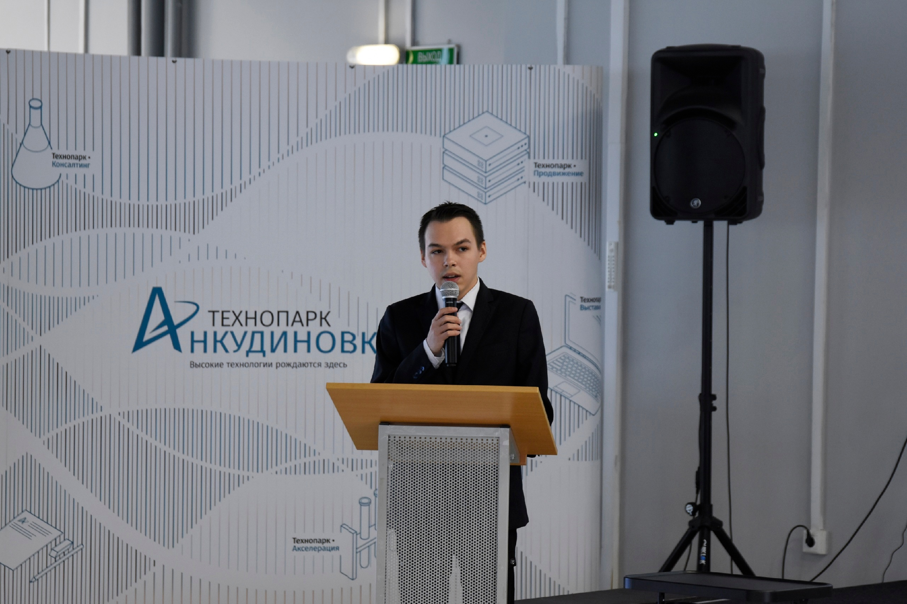

Обо мне
Меня зовут Лев Харитонов, и я разработчик с широким кругом профессиональных интересов.
В 2024 г. окончил АПИ НГТУ по направлению подготовки "Прикладная математика" с отличием.
В конце 2023 года выиграл конкурс "УМНИК" Фонда содействия инновациям. В начале 2025 года проект был успешно закрыт. В ходе проекта был создан Виртуальный тренажёр-симулятор металлорежущих станков "Эсиман".
На данный момент обучаюсь в магистратуре АПИ НГТУ им. Р. Е. Алексеева по направлению "Прикладная математика" с профилем в области теории автоматического управления.
Являюсь автором и соавтором четырёх свидетельств на программу для ЭВМ, а также более 40 научных публикаций.
Победитель многих научно-технических конкурсов различного уровня.
Дважды стипендиат Правительства РФ, трижды стипендиат Президента РФ, дважды стипендиат Правительства РФ по приоритетным направлениям, трижды стипендиат Президента РФ по приоритетным направлениям.
Языки: C, C++, C#, Matlab, Python, SQL, PHP, Java.
Фреймворки и платформы: Unity, Xamarin, .NET MAUI, MATLAB, WPF, Wolfram Mathematica.